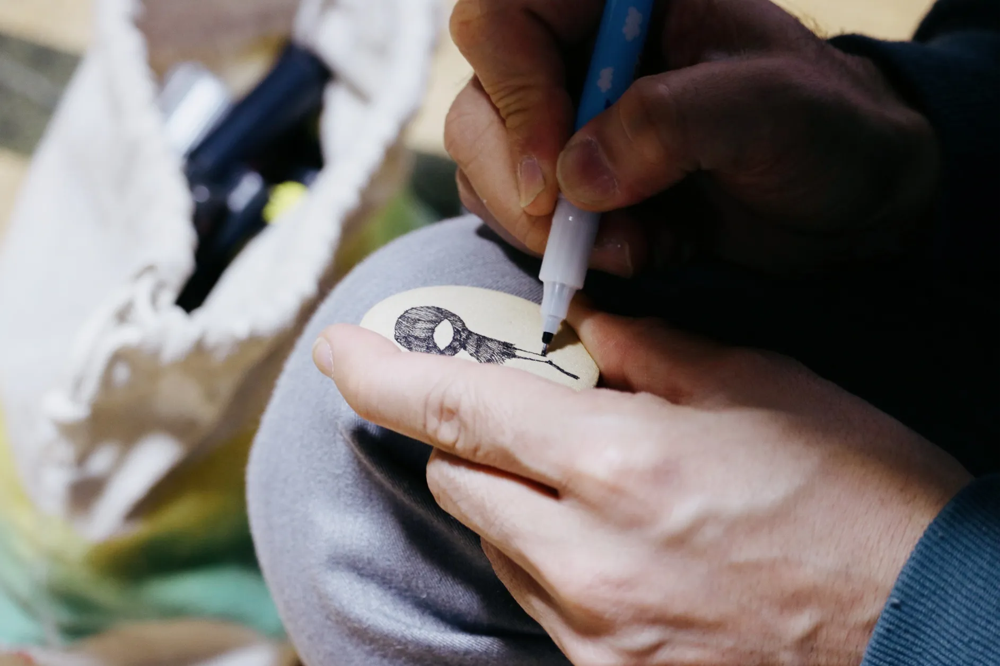

DJ R.I.P.
出会いは2014年、高校3年生
受験期で心身ともに苦しく過ごしていた時
両親が息抜きにとリップさんの個展に
連れて行ってくれたことがきっかけでした
偶然在廊されており話すことが出来た
リップさんという、穏やかなその人は
人生ではじめて出会った
｢描かずにはいられない人｣でした
それまでの自分には見えていなかった世界、
この世には利益や仕事としてではなく
ただひたすらに絵を描いて
生きている人がいるのだということ
自身が絵をはじめとする美術作品や
クリエイティブな分野に興味を持ち始める
大きなきっかけとなった人です
手そして、
長い付き合いの中でも
唯一といっていいほどに
｢背景｣や｢環境｣などで人を判別することなく
「向き合う人｣にちゃんと目を合わせて
ずっと変わることのない温度で
会話をしてくれる人です
その人が何者で、何を成しているか
それは重要ではないはずなのに
様々な情報や要素に惑わされてしまう日々のなか
いつ会っても変わることのない
リップさんの持つ本当の優しさに救われるのです
出会った頃から、個展やイベントで
実際に絵を描く場面に
何度も立ち会わせていただいていますが
描く線、一本一本に感情や願いを込めながら
真剣に絵を描く強い眼差しに、いつもグッときます
存在としては
もはや妖かしのようなゾーンに居る気がしている
ので偶然出会えたら幸運になれるかも
そんな感じがします
ね
